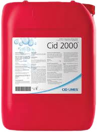

CID 2000®
Nettoyant acide et désinfectant des circuits d'eau : élimine biofilms, dépôts de calcaire et bactéries dans les lignes d'abreuvement, brumisateurs et tanks. Produit CID LINES distribué par MARIDAV CI.

Atouts CID 2000®
L'eau d'abreuvement est une voie de contamination majeure : les biofilms des canalisations hébergent des bactéries. CID 2000 nettoie et désinfecte ces circuits souvent négligés.
Qualité d'eau
Supprime les biofilms et dépôts qui hébergent les bactéries dans les lignes.
Polyvalent
S'utilise en curatif comme en préventif sur toutes les lignes d'eau.
Eau chaude ou froide
Efficace quelle que soit la température de l'eau du circuit.
Pompe doseuse
Compatible avec les pompes doseuses, en respectant matériaux et dilutions.
Protocole d'hygiène des circuits d'eau
Vidange des lignes
Éliminer l'eau stagnante des circuits d'abreuvement.
Circulation
Injecter la solution diluée à 0,5–2 % et la laisser agir 30–60 minutes.
Rinçage
Rincer abondamment jusqu'à pH neutre avant la remise en eau pour les animaux.
Ne jamais laisser les animaux boire la solution : nettoyer et rincer avant remise en eau.
Caractéristiques techniques
| Nature | Détergent acide pour circuits d'eau |
| Compatibilité | PVC, PE, inox (suivre la dilution) |
| Applications | Abreuvoirs, brumisateurs, tanks de préparation |
| Temps de contact | 30–60 min selon l'encrassement |
| Formats | Bidons 5 L, 20 L |
Pour les surfaces et bâtiments
CID 2000 traite l'eau ; pour les parois, sols et équipements, utilisez Kenosan puis Virocid.
Peut-on l'utiliser en présence d'animaux ?
Quelle fréquence recommandez-vous ?
Est-il compatible avec les pompes doseuses ?
Pourquoi traiter les circuits d'eau ?
Produits associés


Une eau d'abreuvement saine, tout le cycle
Audit pH/dureté, installation de pompe doseuse et formation : nos techniciens vous accompagnent.